Les icônes d’un Take : dix façons de les ranger
Ce que tu fais : choisis une proposition par son numéro (par exemple « la 1b »).
Le build 196 prend déjà ta capture : les votes à gauche ; à droite le fantôme, le repost, l’envoi et les commentaires, avec les espaces du 195. Cette page sert à choisir la suite. Deux machines ont fait deux études chacune de son côté ; elles sont réunies ici. Les captures viennent de la vraie app, avec des données de test.
Aller à : Aujourd’hui · Références · Propositions 1 · 2 · 3 · 4 · 5 · 6 · 7 · 8 · 9 · 10 · Recommandation
Aujourd’hui
Avant la décision du 196. Les numéros rouges renvoient à la liste.
La rangée, clair

La rangée, sombre

Le Take ouvert

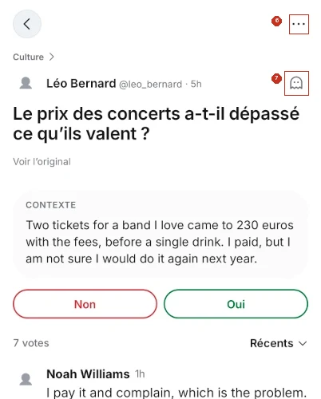

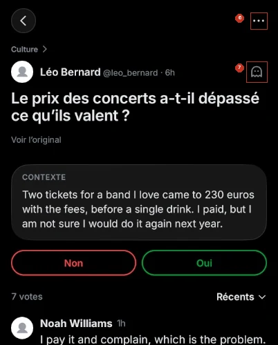
Ce qui cloche
- Le fantôme ouvre la barre. C’est un réglage du vote, pas une action. Il prend la place que X donne à « répondre ».
- L’ordre ne raconte rien. L’envoi est au milieu, les commentaires en 4e. Chez X, la conversation vient d’abord et l’envoi en dernier.
- « 7 votes » est le seul mot de la barre. Il est dans une colonne plus large, collé à droite, et sa largeur change avec la langue.
- Le toucher est trop bas : 39 pt de haut, Apple demande 44.
- Le « … » de la rangée est petit à viser, collé au bord.
- Le Take ouvert perd la barre. Pas de repost, l’envoi est caché dans le « … ». Qui lit un Take ne peut plus le reposter.
- Le fantôme et « 7 votes » changent de place entre la rangée et le Take ouvert. Dans le Take ouvert, deux fantômes se ressemblent : voter en anonyme et commenter en anonyme.
- En très grand texte, les icônes ne grandissent pas : la barre paraît minuscule sous la question.
- Deux dessins pour partager (l’avion, et une autre icône pour exporter la courbe), et plusieurs tailles de « … ».
- Le Take n° 1 d’Explorer n’a aucune barre.
- Le « i » du Take ouvert veut dire « photo » : il retourne la carte vers la photo.
Ce qui marche, et que toutes les propositions gardent : des colonnes de largeur fixe (une icône ne bouge pas quand un chiffre arrive) et rien à la place d’un 0.
Les références
- X (notre référence première)
- Répondre, repost, j’aime, vues, puis signet et partage à droite. La même barre sous le post ouvert. Le « … » en haut à droite.
- Threads
- J’aime, répondre, repost, partager, serrés à gauche. « … » en haut à droite.
- J’aime, commenter, repost, envoyer à gauche ; enregistrer seul à droite.
- TikTok
- Une colonne sur la vidéo, chaque chiffre sous son icône.
- Bluesky
- Répondre, repost, j’aime, puis enregistrer, partager et « … » au bout de la barre.
La leçon : la conversation d’abord, l’envoi à la fin, les réglages personnels à part à droite, et la même barre sur le post ouvert. Notre fantôme est un réglage personnel, comme le signet.
Les propositions
Rangées de la plus proche de X à la plus éloignée. Touche une image pour la voir en grand.
1L’ordre de X
Les deux pistes l’ont proposée : variante a (piste A), variante b (piste B)
Une seule barre, dans l’ordre de X : les commentaires d’abord, puis le repost, puis les votes avec une petite icône de graphique. La même barre revient sous les choix du Take ouvert. Les deux variantes ne diffèrent que par la place du fantôme.
Les deux barres de près
Clair
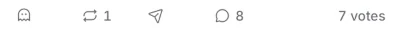
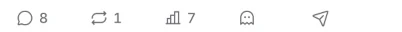
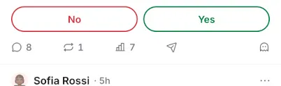
Variante 1a
La rangée
Clair

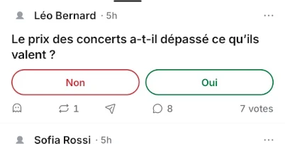

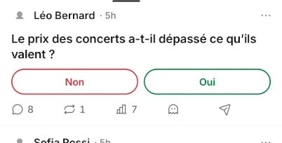
Sombre

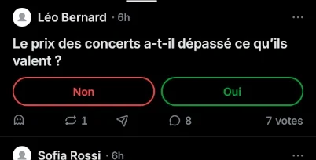

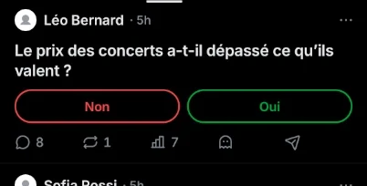
Le Take ouvert
Clair

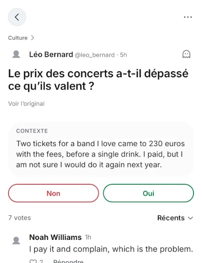

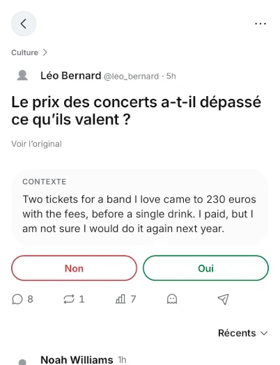
Sombre

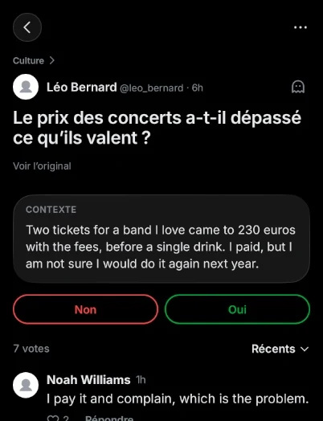

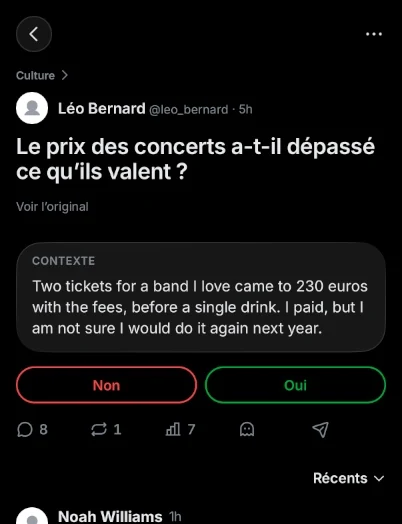
Variante 1b
La rangée
Clair

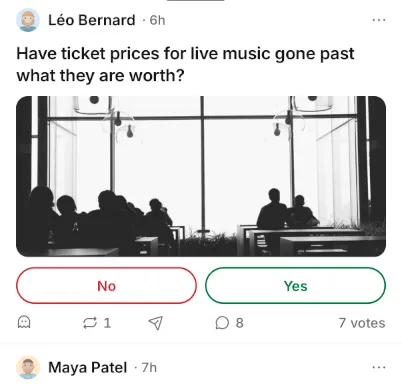

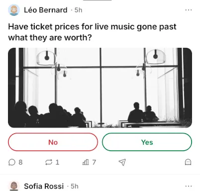
Sombre

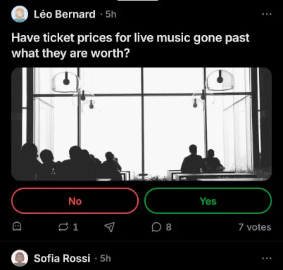

Le Take ouvert
Clair

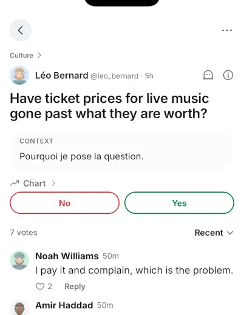

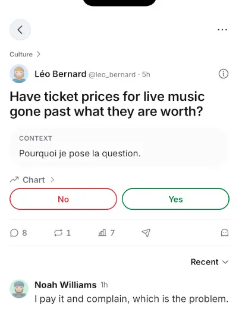
Sombre

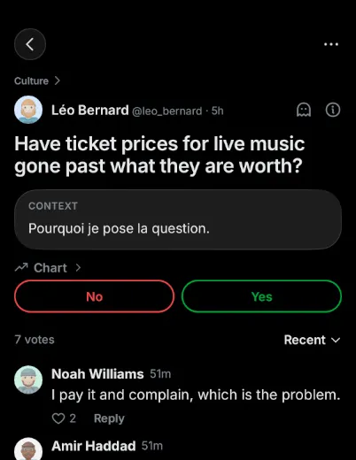

Il gagne
- Les gestes de X : rien à réapprendre.
- On peut enfin reposter et envoyer depuis le Take ouvert.
- Toutes les colonnes ont la même largeur, votes compris.
- Le fantôme se dessine comme aujourd’hui.
Il perd
- Le mot « votes » : il reste le chiffre et l’icône (VoiceOver dit toujours « 7 votes »).
- Chaque rangée grandit de 5 à 7 pt, pour atteindre 44 pt de toucher.
- Le fantôme quitte le haut du Take ouvert.
- Le Take ouvert retrouve des compteurs, retirés exprès par une décision passée.
2Une barre fixe dans le Take ouvert
Images de la piste B
La rangée suit la proposition 1b. Dans le Take ouvert, la barre ne défile plus : elle reste collée au-dessus du champ de commentaire, comme X garde ses boutons en bas quand on lit un lien.
La rangée
Clair
Sombre
Le Take ouvert
Clair

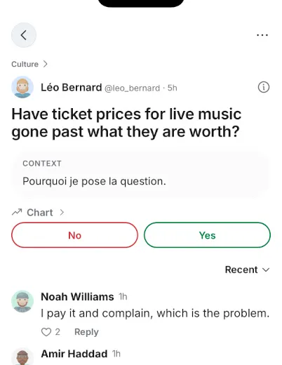
Sombre

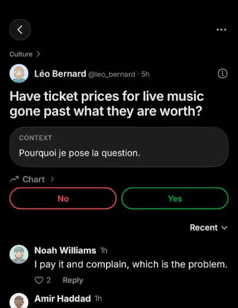
Au fond de la discussion, la barre reste là

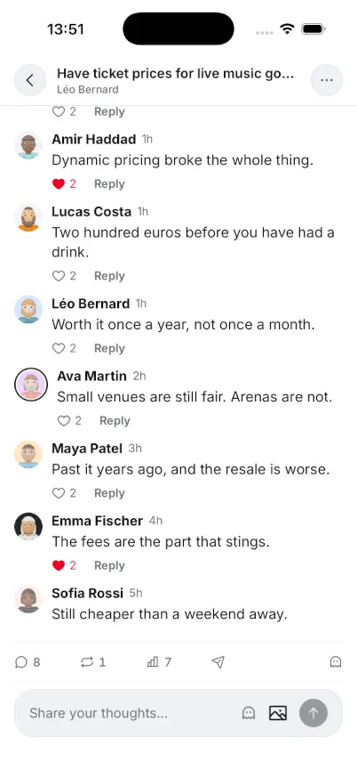

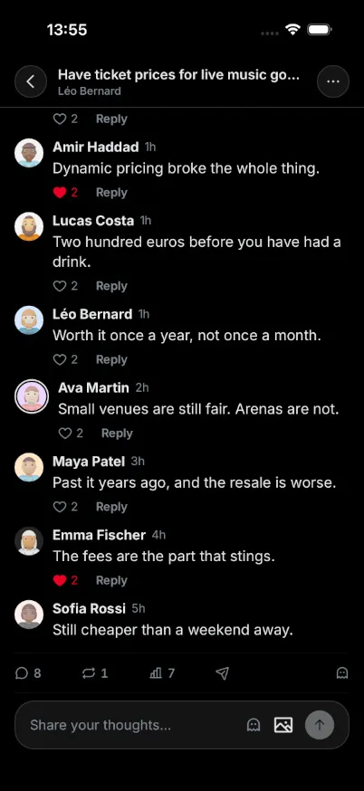
Il gagne
- Reposter, envoyer ou voir les votes à tout moment, sans remonter.
Il perd
- 44 pt de moins pour lire les commentaires.
- Deux fantômes très proches : celui du vote dans la barre, celui du commentaire dans le champ.
3Changer le moins possible
Images de la piste A
L’ordre d’aujourd’hui ne bouge pas. On grossit les icônes, le toucher passe à 44 pt, et le Take ouvert met le repost et l’envoi en haut, à côté du « … ».
La rangée
Clair

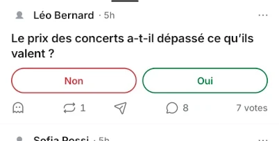
Sombre

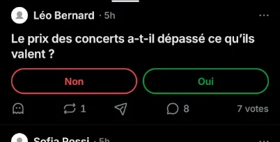
Le Take ouvert
Clair

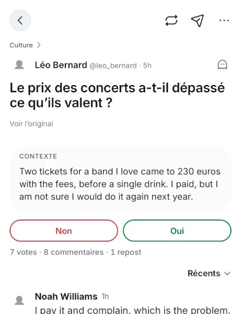
Sombre

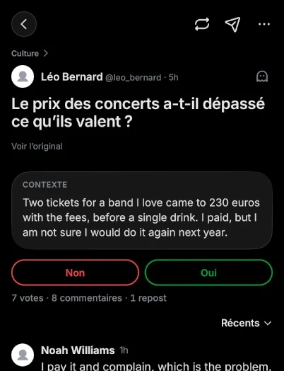
Il gagne
- Rien à réapprendre dans le fil.
- Le Take ouvert donne le repost et l’envoi sans chercher dans le « … ».
- Colonnes égales et toucher à 44 pt.
Il perd
- L’ordre reste loin de X : le fantôme en tête, l’envoi au milieu.
- Deux modèles : une barre en bas dans le fil, des icônes en haut dans le Take ouvert.
4Le fantôme rejoint le vote
Images de la piste A
À gauche ce qu’on fait du Take (commenter, reposter, envoyer), à droite ce qui touche au vote : le fantôme, puis « 7 votes » avec son mot.
La rangée
Clair

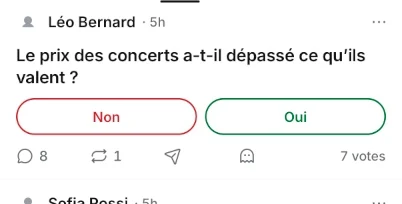
Sombre

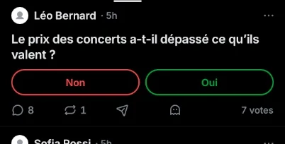
Le Take ouvert
Clair

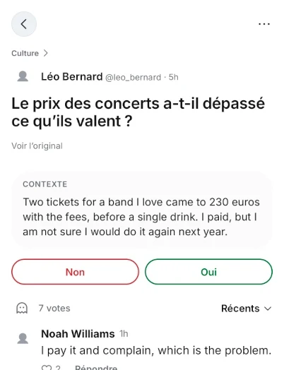
Sombre

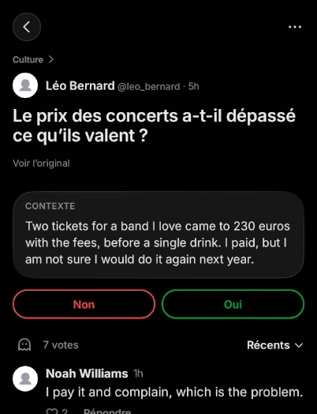
Il gagne
- Le fantôme se lit comme une façon de voter, collé au compte de votes.
- « 7 votes » garde son mot.
Il perd
- Le Take ouvert n’a toujours ni repost ni envoi visible.
- Les longues langues et le très grand texte doivent tenir dans une colonne : le texte rétrécit.
- L’ordre n’est pas celui de X.
5Deux étages : le vote, puis la conversation
Images de la piste B
Juste sous les choix, une ligne pour le vote : le fantôme et « 7 votes ». Puis un trait, et trois colonnes : commentaires, repost, envoi. Pareil dans le Take ouvert.
La rangée
Clair

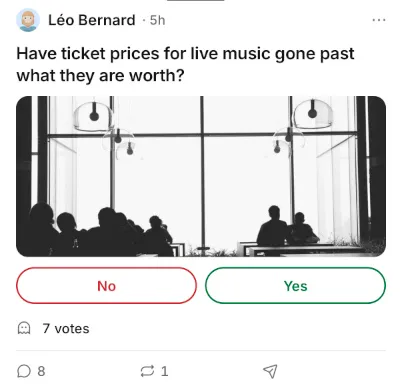
Sombre

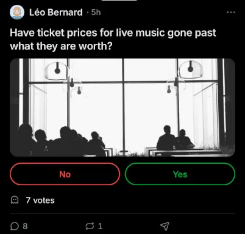
Le Take ouvert
Clair

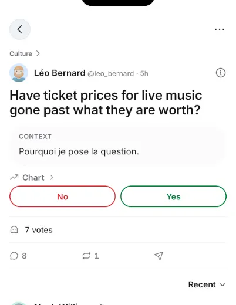
Sombre

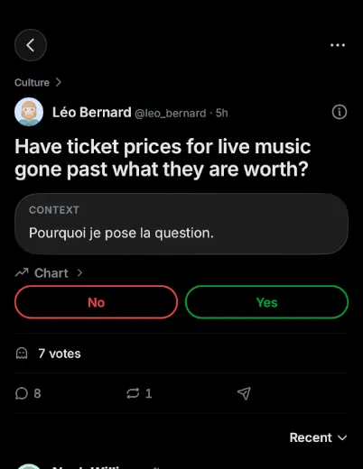
Il gagne
- Le fantôme est collé au vote qu’il change, et « 7 votes » garde son mot.
- Trois actions seulement, plus faciles à viser.
Il perd
- 34 pt de plus par rangée : moins de Takes par écran.
- Deux lignes à lire au lieu d’une, et un écart avec X.
6Le menu descend, les votes montent
Images de la piste A
Le « … » quitte le haut et ferme la barre du bas : 👻 · 💬 · 🔁 · ✈︎ · …. Le nombre de votes rejoint la ligne du nom et de l’heure.
La rangée
Clair

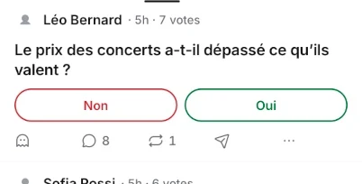
Sombre

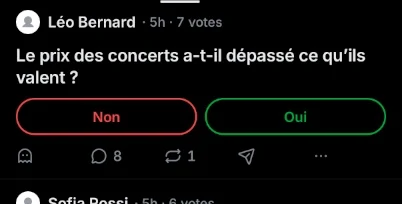
Le Take ouvert
Clair

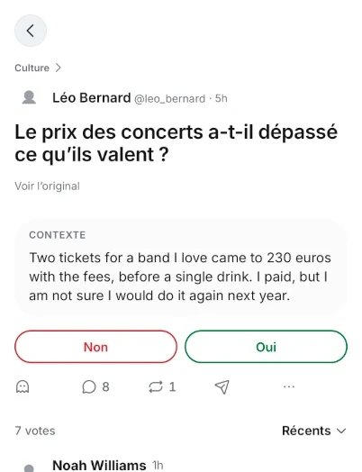
Sombre

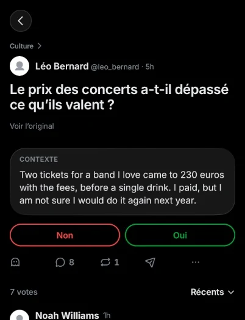
Il gagne
- Toutes les actions au même endroit, sous le pouce.
- Plus de petit « … » à viser en haut.
- Le nombre de votes se lit comme une information.
Il perd
- X garde le « … » en haut à droite : on s’en écarte.
- Les noms longs sont coupés plus tôt.
- Le fantôme reste en premier.
7Le menu au bout de la barre, comme Bluesky
Images de la piste B
Six colonnes : 👻 · 💬 · 🔁 · ✈︎ · votes · …. La ligne du nom ne garde que le visage, le nom et l’heure. Le Take ouvert n’a plus de « … » en haut.
La rangée
Clair

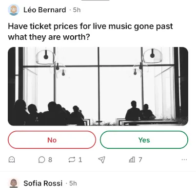
Sombre

Le Take ouvert
Clair

Sombre

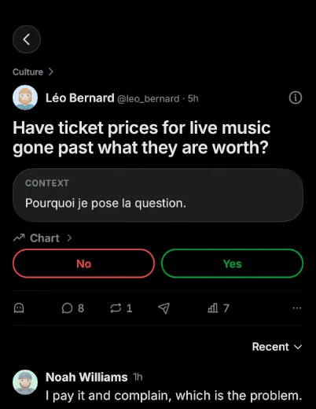
Il gagne
- Un seul endroit pour toutes les actions.
- Une ligne du nom plus calme, surtout pour nos Takes sans auteur.
Il perd
- Six colonnes plus serrées.
- Le « … », qui sert à signaler, s’éloigne de ce qu’il signale.
- On s’écarte de X.
8Un seul bouton pour diffuser
Images de la piste B
Quatre icônes, plus grandes : 💬 · ✈︎ · votes · 👻. L’avion ouvre une seule feuille : reposter, envoyer, copier le lien.
La rangée
Clair

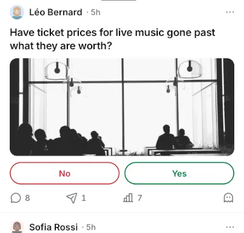
Sombre

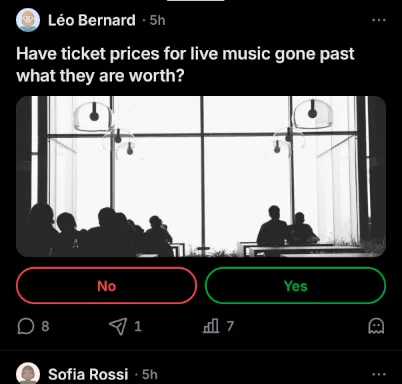
Le Take ouvert
Clair

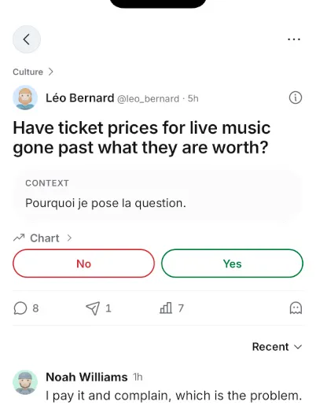
Sombre

La feuille de l’avion

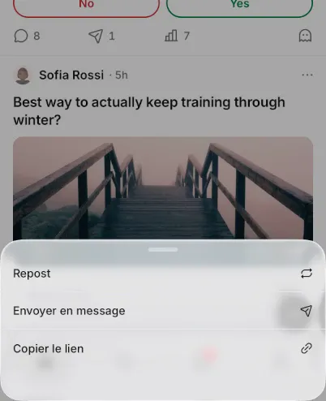

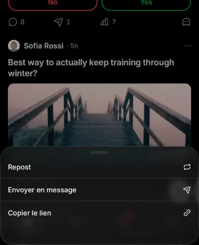
Il gagne
- Une barre plus aérée, lisible à toutes les tailles de texte.
- Une seule icône pour tout ce qui fait circuler un Take.
Il perd
- Reposter demande deux touchers : sans doute moins de reposts.
- Le chiffre de l’avion additionne reposts et envois.
9Les compteurs sous les icônes
Images de la piste A
Une grille régulière : chaque icône centrée dans sa colonne, son chiffre dessous, comme la colonne de TikTok mise à l’horizontale.
La rangée
Clair

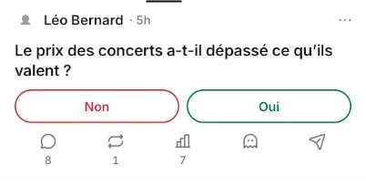
Sombre

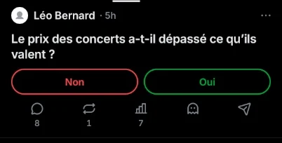
Le Take ouvert
Clair

Sombre

Il gagne
- Des icônes plus grandes et bien alignées.
- Les chiffres ne se disputent jamais la place, même en très grand texte.
Il perd
- Environ 22 pt de plus par rangée : moins de Takes par écran.
- Ce n’est plus X, c’est TikTok.
- Des chiffres plus petits qu’aujourd’hui.
10Une rangée calme
Images de la piste B
Le fil ne garde que le fantôme, les commentaires et les votes. Le repost et l’envoi montent dans le « … ».
La rangée
Clair

Sombre

Le Take ouvert
Clair

Sombre

Le « … » reçoit le repost et l’envoi


Il gagne
- Un fil plus calme, l’œil va à la question et au vote.
Il perd
- Le repost et l’envoi se cachent : deux touchers, beaucoup moins de diffusion.
- C’est le plus grand écart avec X.
Ma recommandation
La 1b : c’est la seule qui reprend l’ordre de X et sa règle « la même barre partout », avec le fantôme rangé à droite comme le signet de X, donc le Take ouvert retrouve enfin le repost et l’envoi. J’y ajoute ce que les deux études demandent pour toutes : 44 pt de toucher, des icônes qui grandissent avec le texte, et un seul dessin pour partager ; c’est toi qui décides.